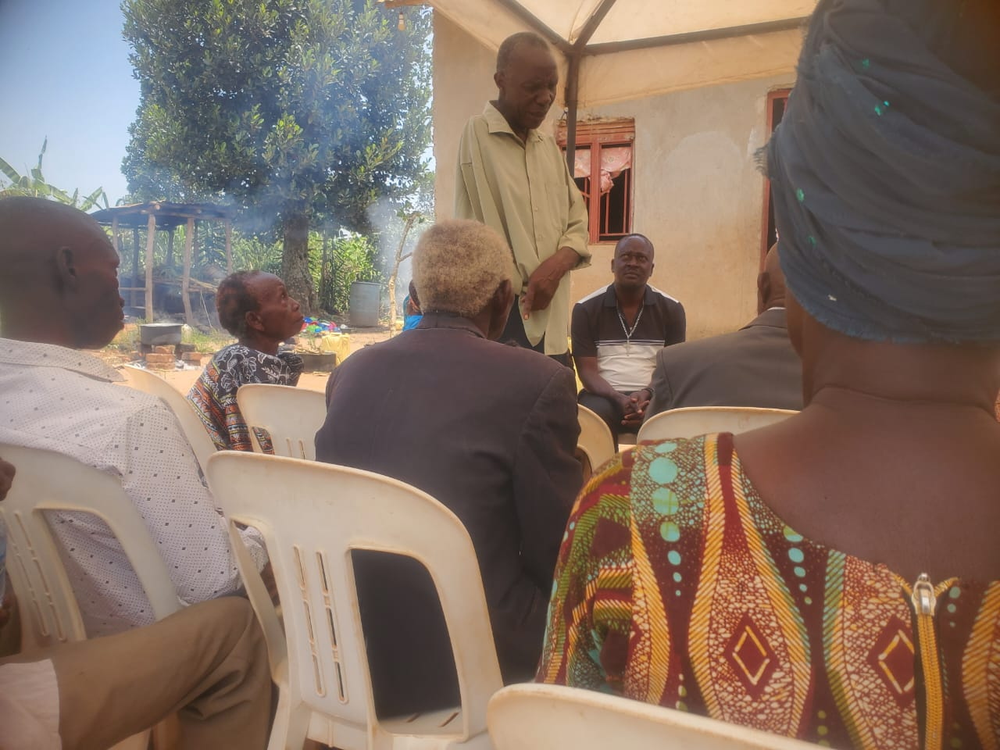

About the hub
Enterprise with roots.
A practical model for sustainable enterprise, shaped in Mpigi.
HIH connects product innovation with farming, environmental repair and community capacity building.
01 / Our purpose
Local resources.
Longer value chains.
Herbert’s Incubation Hub is a multi-sector innovation incubator founded in Mpigi, Central Uganda.
The hub works across circular biotechnology, commercial agriculture, civil environmental restoration and community empowerment. Rather than treating these as separate concerns, HIH connects them: agricultural by-products become product inputs, livestock waste supports agroforestry, and community training helps local ideas become working enterprises.
Its purpose is practical—developing useful products, stronger local systems and sustainable livelihood opportunities from resources already present in the community.

Founder & executive leadership
Herbert Usher Mukiibi
Herbert is a Ugandan social entrepreneur and project manager dedicated to rural development, agricultural value addition and environmentally responsible enterprise.
As Founder, CEO and President of Herbert’s Incubation Hub and Herbert’s Foundation, he directs programmes in circular agriculture, water security, ecological restoration and community capacity building.
Information Technology and Project Management studies, Makerere University
Business development, technology and programme leadership
Mpigi, Central Region, Uganda
02 / Working principles
One system,
not isolated projects.
Circular use
Look again at what is treated as waste and find a responsible route back into production.
Practical learning
Build skills through real processes—collecting, testing, producing, restoring and improving.
Community participation
Invite women, young people and local partners into initiatives designed around shared needs.
Environmental responsibility
Connect enterprise development with water protection, land restoration and agroforestry.